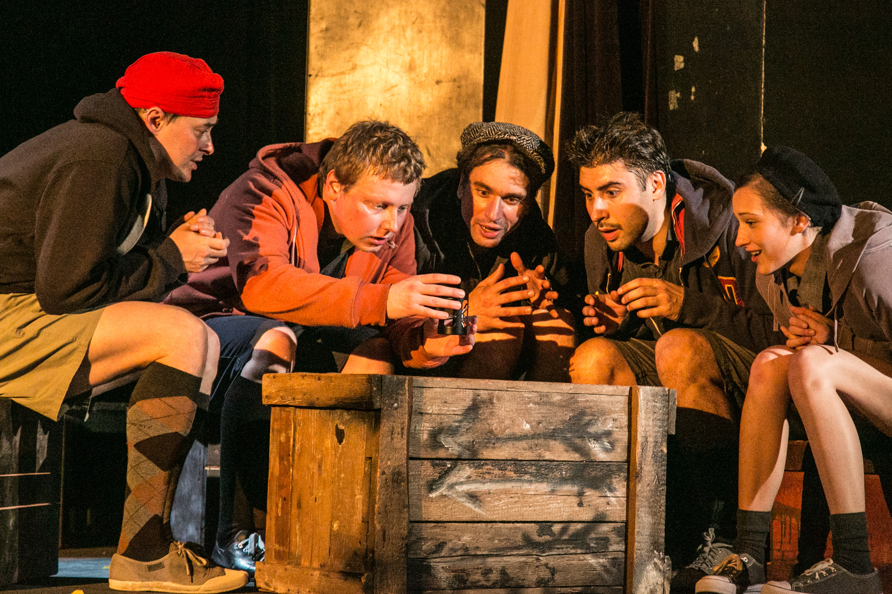

Asi si říkate
jak nás napadlo,že zkusíme zahrát i sci-fi.Začalo to tak že v roce 2019 Emily Doležalová přišla s nápadem, že
uděláme něco pro mládež. Tak hledala a hledala a našla,že v roce 1942 vyšel film ,který
je asi jeden s prvních kde se sci-fi oběvilo.